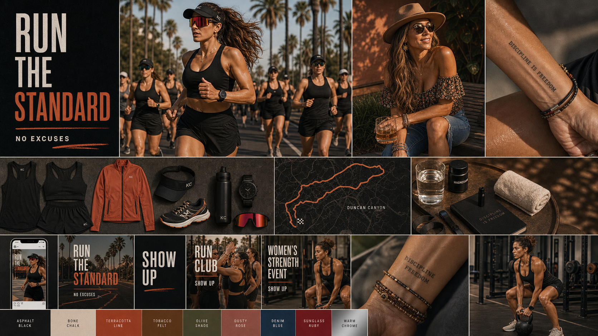
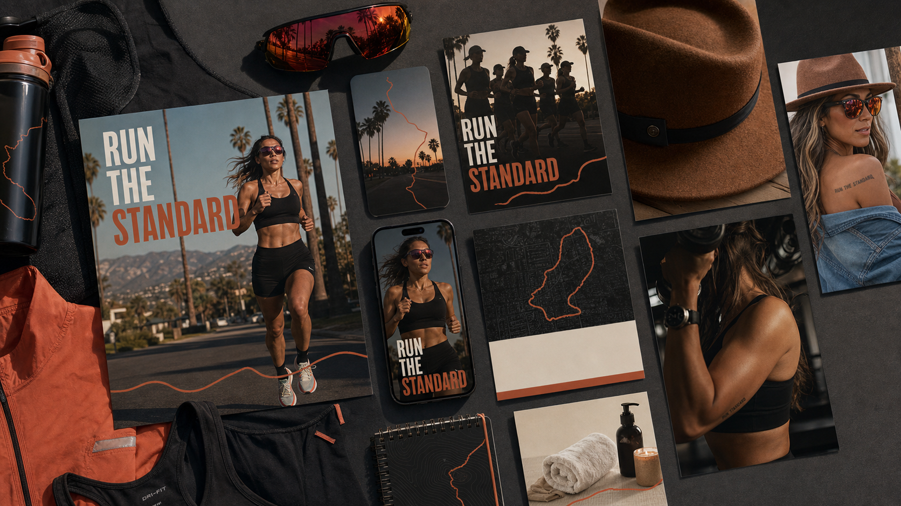
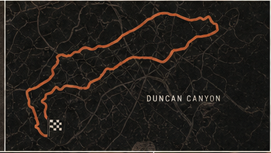
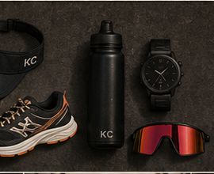
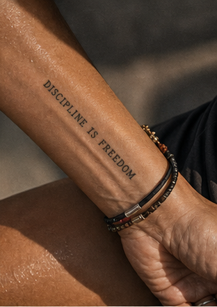
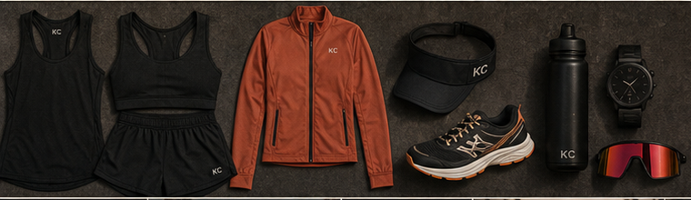
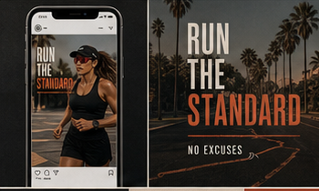
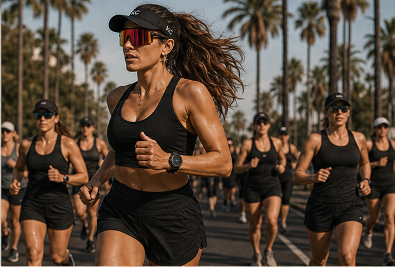
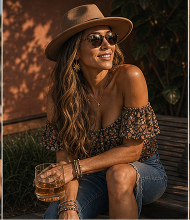
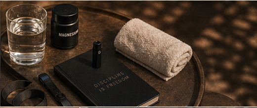

Sport-led, warm, sharp.
Direction Two / Athletic community
Run the Standard.
SoCal running, sport sunglasses, terracotta heat, fedora warmth, body proof, and disciplined recovery.
01
Stylescape
Athletic heat with grown femininity.
Running routes, sport lenses, terracotta, fedora warmth, body proof, and recovery rituals.

Route line, lens flash, body phrase.
Badass, feminine, SoCal.
02
Brand signature
Route, lens, body proof.
A movement-led signature family built around effort, focus, and repetition.

Application sheet
Run posts, sport lenses, fedora, recovery, stories, and community material.

Route trace
The movement cue.

Sport lens
Fast athletic recognition.

Body proof
Discipline made personal.
03
Color and type
Warm athletic, not neon.
Terracotta and tobacco over asphalt black, with heavy type and ruby sport accents.
Asphalt Black#111111
Bone Chalk#E6DED2
Terracotta Line#B94C28
Tobacco Felt#6F4423
Olive Shade#5E6645
Sunglass Ruby#8E2426

Material palette
Asphalt kit, bone paper, terracotta heat, tobacco felt, olive, ruby lens.

Type and social
Bold, fast, legible in motion.
Ruby lens
The sharp accent that keeps it badass.
04
Photography and wardrobe
Run first, warmth after.
Sport sunglasses, palms, sweat, strength, fedora, denim, and recovery.

SoCal run
Palms, pace, effort, sport lenses.

Fedora warmth
Feminine, warm, earned.

Recovery ritual
Hydration, towel, journal, controlled recovery.
05
Applications
How the brand shows up.
Run recaps, phone stories, event cards, lens details, fedora portraits, and recovery rituals.
Route recaps, stories, events, lens, fedora, recovery.
Route trace and terracotta line.
Athletic, warm, social, direct.
Run post
Route, time, proof statement.
Daily proof
Story anchor and body detail.
Ritual system
Grown, practical, controlled.
Creative Direction
Pending strategy approval.
Your creative directions are built and waiting. They unlock the moment we confirm your Focus Star together.
Review the strategy first →